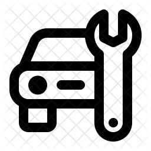

Marks Japanese European Auto
Come Visit Today!

Highly Trained Technicians and Mechanics
Service you can count on!

Fixes for over 20+ car brands of all types are available!
We are the best in town!
If you're looking for Japanese/European auto repair in
Bellevue, Kirkland, and
Issaquah, WA , you've
found us. At Marks Japanese-European Auto, we work hard to earn your trust and loyalty. We know how
important it is to find car service you can rely on, so your satisfaction is our top priority each
and
every day.
Here at Marks Japanese-European Auto, we understand what makes customer service truly outstanding.
You
will feel the difference exceptional customer care makes when you work with us. We know
Japanese/European auto repair offers you lots of choices, and we aim to provide the kind of caring
customer service that will bring you back.
Our car service offers you years of combined expertise from our well-trained technicians. We treat
our
Japanese/European auto repair professionals well because we value their skill and can-do attitude.
We
know our team sets us apart, saving you time and money, not to mention worry. When it comes to
Japanese/European auto repair in Bellevue, Kirkland, and Issaquah, WA , we are totally confident
that
Marks Japanese-European Auto is the best option in town!
Locations/Contact
Bellevue, WA
Kirkland, WA
Issaquah, WA
Redmond, WA


Marks Japanese European Auto
Come Visit Today!

Highly Trained Technicians and Mechanics
Service you can count on!

Fixes for over 20+ car brands of all types are available!
We are the best in town!